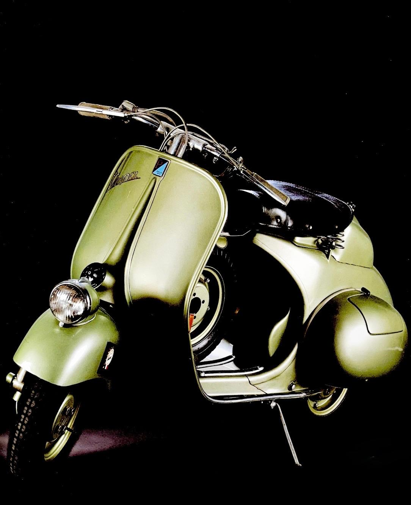

VESPA SPORT

NATA PER CORRERE
La Vespa Sport del 1951 mantiene l'impostazione generale della Vespa di serie, ma presenta numerose soluzioni pensate per l'impiego sportivo. Il manubrio e i comandi sono adattati alle esigenze della competizione.
Particolare attenzione è dedicata all'autonomia e alla possibilità di intervenire durante la gara. La disposizione della ruota di scorta e del serbatoio risponde alle necessità dei percorsi più impegnativi.
Anche sospensioni, freni, carburatore, motore e trasmissione presentano soluzioni legate all'utilizzo sportivo. Il risultato è una Vespa ancora riconoscibile nelle forme, ma preparata per un impiego molto più severo.